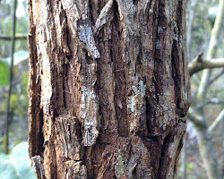

Fire ecology examines the intricate interplay between fire and ecosystems. Fire, a longstanding natural force, profoundly shapes landscapes. It offers benefits by clearing dead vegetation, enriching soil with nutrients, and fostering habitats for fire-resilient species. Fire wields a dual nature, yielding both positive and negative outcomes for ecosystems. By preventing excessive vegetation buildup, it curbs catastrophic wildfires and kindles new plant life. Moreover, it rejuvenates soil nutrients by releasing them from spent flora.
Yet, fire also wields destructive potential, killing plants, emitting pollutants, and displacing wildlife. Ecosystem impact hinges on factors like ecosystem type, fire intensity, and frequency. Prudent fire management is essential to curtail adverse effects and amplify ecological advantages. Fire regimes, determined by climate, vegetation, and human influence, dictate natural fire patterns. Conversely, fire suppression, despite intent, can escalate risks by accumulating fuel and promoting severe blazes. Fire management orchestrates controlled burns, prevention, and suppression to achieve desired ecosystem outcomes.
However, fire can also have negative effects on ecosystems. For example, fire can kill trees and other vegetation, and it can release pollutants into the air. Fire can also displace wildlife, and it can make it difficult for ecosystems to recover.
The Few Animals which Adapted to the Fires
ok will fill some stuff here.